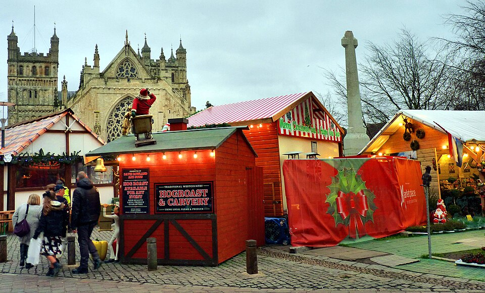

01 · A festive wander
Exeter Cathedral Christmas Market
Cathedral Green, Exeter
Let the kids choose a chalet to look around, then see what they can spot when they look up at the cathedral.
Free market entry
Sat 14, 10am–9pm · Sun 15, 11am–5pm
Market opening times →